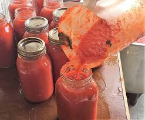

Pasta Sauce

Homemade Pasta Sauce
To make your very own homemade pasta sauce you will need:
28 oz of crushed tomatoes, either canned or fresh
One (1) white onion, finely diced
1/4 teaspoon red pepper flakes
Three (3) cloves of garlic minced
Three (3) tablespoons of olive oil
One (1) tablespoon of butter
Steps
In a large pot heat your oil and butter
Saute your onion and minced garlic until translucent
Mix in all herbs and spices
Add crushed tomatoes
Simmer for thirty minutes
Optional:
If sauce is too chunky use blender or immersion blender to smooth
Add meat and brown before adding crushed tomatoes
Always try to reserve a little pasta water to add to your sauce!